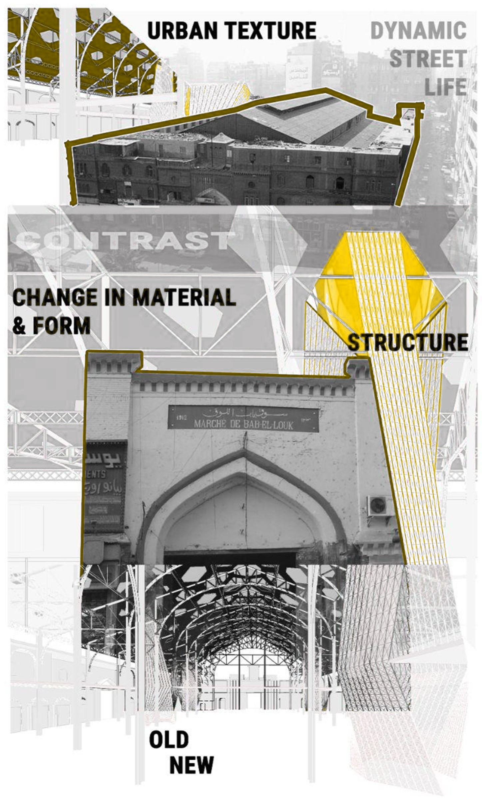
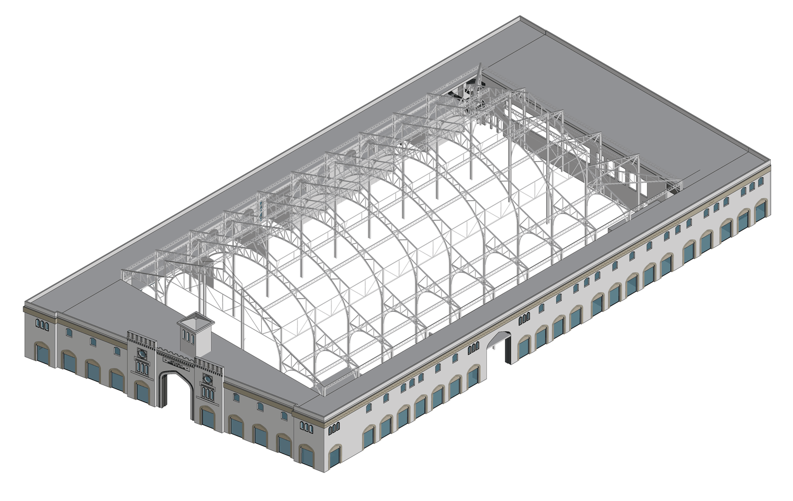
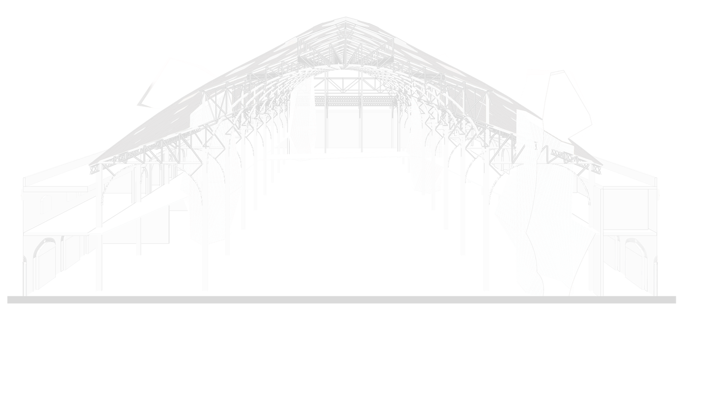

Reviving Bab Al-Louq
Complex GeometriesA hexagonal gridshell grown over the existing frame of a historic market hall, a lightweight lattice roof that revives Bab Al-Louq. An attractor-driven pattern thickens where the structure needs to carry and opens where light should fall, turning a flat market into a luminous, column-light hall while keeping its old walls intact.
-
Attractor patterndensity follows structure & light
-
Form findinggraph-mapped shell geometry
-
Panelizationfrom surface to buildable panels
Complex Geometries · MaCAD · IAAC · 2025–26
Concept & Process
The concept reads the site, its urban texture, its contrast, and the tension between old and new. From there the gridshell is generated over the existing frame: a roof surface divided into hexagonal cells and scaled by an attractor curve, dense where structure is needed, open where light falls, then projected and panelised.


The Section
In section, the new canopy floats over the existing structure: the roof trusses, the bubble-like observatory volumes emerging from the roof, and the tunnel-like extended circulation below, until light pours through the lattice and casts its hexagonal print across the floor.
